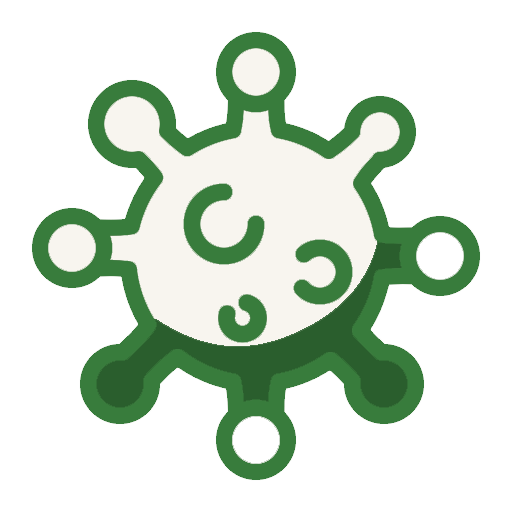
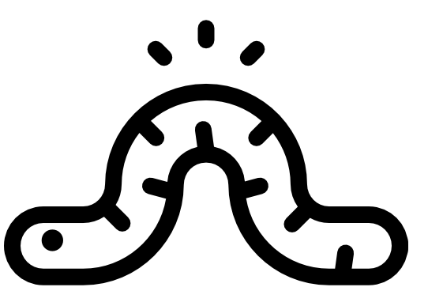
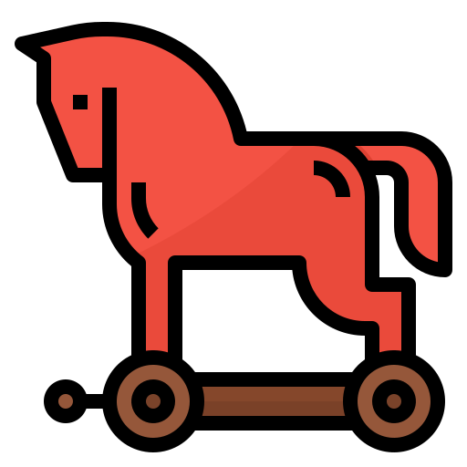
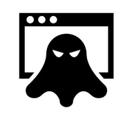

Ucjenjivački softver (eng. ransomware) je jedan od zlonamjernih softvera koji uskraćuje pristup korisnikovom uređaju
i podacima na istom sve dok se ne uplati novčani iznos hakeru.
Najviše se javljaju dvije vrste ovog softvera: jedni koji zaključaju sustav korisnika i oni kojima se kriptiraju datoteke.
Koliko su ustvari opasni saznajte na sljedećem linku:
Statistika o ransomwareu
 Virus
Računalni program koji bez dopuštenja ili korisnikova znanja svojim umnožavanjem može zaraziti računalo.
To radi na način tako da kopira samog sebe u memoriju računalnog sustava ili datoteke.
Širenje virusa s jednog računala na drugi odvija se na jedan od slijedeća dva načina: putem interneta (na primjer, e-mail poruka)
ili medija vanjskog oblika kao što je u današnje vrijeme USB disk.
Postoji razlika između virusa i crva te trojanskog konja.
Za razliku od crva virus ne mora biti vezan uz zaraženi program, a za razliku od trojanskog konja, on se može umnožavati.
Želite li saznati više o virusima? Kliknite na sljedeći gumb: O virusima
Spyware
Iz samog imena nazire se njegova svrha. Prikupljaju se podaci o korisnikovim aktivnostima na internetu i svemu što radi na mreži.
Svi prikupljeni podaci šalju se najčešće samome napadaču. Hakerima je ovo uvelike značajno jer lako pristupe Vašim osobnim podacima,
navikama, brojevima kreditnih kartica.
Sve to dovodi do krađe identiteta.
 Crv
Crv (eng. worm) se širi računalom samostalno, to jest umnožava se (replicira).
Sve kreće od računala na kojemu se nalaze, računala domaćina te se proširuje pomoću mreže na druga računala.
Razlikujemo dvije vrste crva. Prva vrsta crva služi kao posrednik za instaliranje drugih zlonamjernih softvera.
Druga vrsta crva ne uzrokuje nikakvu štetu samom računalu korisnika,
ali se umnožava do te mjere da računalo polako prestaje raditi i postaje sve više opterećeno.
Uglavnom se pojavljuju kao privitak elektroničkoj pošti.
Adware
Zlonamjeran softver koji prikazuje neželjene reklame i skočne prozore.
Nije izostavljena mogućnost praćenja Vaše aktivnosti na mreži i prilagođavanja oglasa istoj.
Teško ga je primijetiti jer najčešće koristi metode kako bi se prikrio kao nešto legitimno ili
povezao s nekim drugim programom te tako instalacijom tog programa ušao na Vaš uređaj.
 Trojanski konj
Zlonamjeran softver predstavljen kao koristan softver.
Ovaj zlonamjeran softver ulazi u Vaše računalo instalacijom aplikacije ili softvera koji se doima potpuno legitimno,
a u pozadini se nalazi neki od zlonamjernih softvera.
Jasna je poveznica u imenu samog softvera s grčkom mitologijom. Kada se instalira, trojanski konj se aktivira na Vašem uređaju.
Ovisno o kakvom softveru je riječ može doći do izrazitih problema, od izmjene operacijskog sustava do preuzimanja dodatnih zlonamjernih softvera.
Vrlo su pogodni i za same napadače koji ih koriste kako bi naštetili korisniku na razne načine.
Standardni antivirusni programi mogu omogućiti zaštitu od trojanskog konja,
ali ako je trojanski konj već u sustavu računala preporučeno je formatiranje tvrdog diska i reinstalacija operacijskog sustava.
 Rootkit
Posebna vrsta zlonamjernog softvera stvorenog u svrhu dolaženja do ovlasti nad korisnikovim računalom.
Napadaču se otvara mogućnost udaljene kontrole nad Vašim računalom. Kao i većina ostalih zlonamjernih softvera rootkit je razvijen
tako da bude nevidljiv na zaraženom računalu i teško ga je za uočiti.
Mogu proći mjeseci, ali i godine prije nego što se primijeti na računalu. Važno je istaknuti kako rootkit može zaraziti računalo na više načina.
Na primjer: aplikacijska razina, razina sistemskih biblioteka, razina operacijskog sustava.
Jedini način kako se riješiti rootkita iz sustava računala je potpuno brisanje diska i reinstalacija cijelog sustava.
Kako bi bili sigurni od rootkit softvera preporuča se pažljiva instalacija upravljačkih programa
i redovito ažuriranje cijelog operacijskog sustava koji se koristi na računalu.